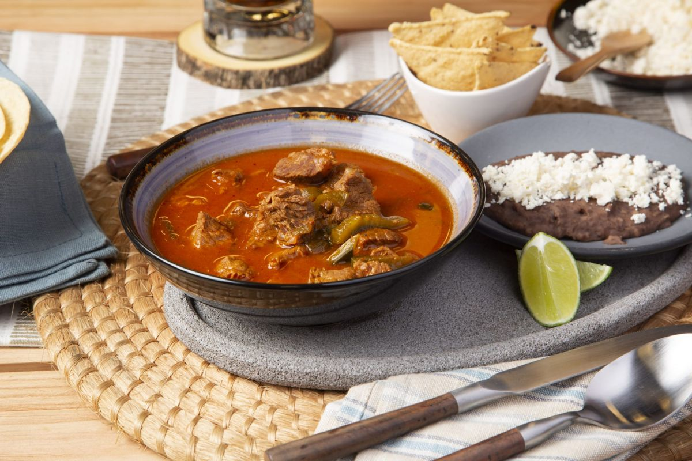
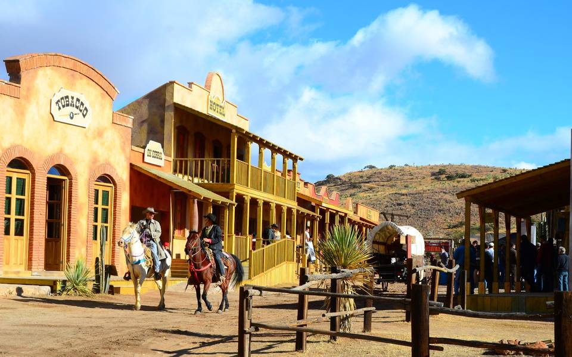

El "Caldillo Duranguense". Este es un guiso tradicional que consiste en carne de res cocida lentamente con chiles secos, tomate, cebolla, ajo y especias. Se sirve caliente acompañado de tortillas de maíz recién hechas. El caldillo es apreciado por su sabor profundo y su capacidad para reconfortar en los días frescos de la región.

El Paseo del Viejo Oeste, también conocido como "Villa del Oeste". Es un parque temático que recrea un pueblo del oeste estadounidense del siglo XIX. Aquí puedes encontrar edificios históricos, tiendas, restaurantes y actividades relacionadas con la cultura del viejo oeste, como espectáculos de vaqueros y paseos en carro

Notas relevantes:
"Tierra del Cine": Durango ha sido escenario de
numerosas películas de Hollywood y de la industria cinematográfica
mexicana. Su paisaje diverso y su arquitectura histórica han atraído a
directores y productores de cine de todo el mundo.
Durango es conocida como la "Cuna del Pancho Villa", ya que el famoso
revolucionario mexicano nació en el pueblo de San Juan del Río,
actualmente llamado "Villa de Guadalupe". Su legado histórico aún se
celebra en la región con museos y monumentos dedicados a él.
"Pueblo Mágico de Nombre": El municipio de Nombre de Dios es uno de
los Pueblos Mágicos de México. Su nombre peculiar proviene de la
devoción a la Virgen de los Remedios y su capilla, construida en el
siglo XVIII.